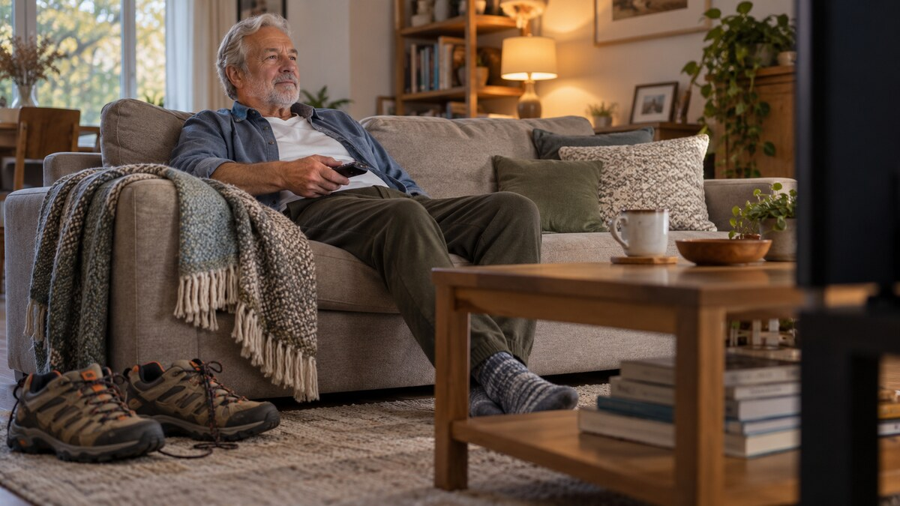
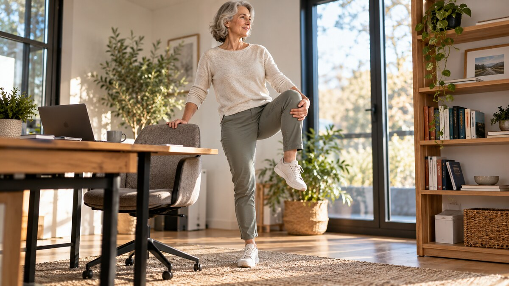
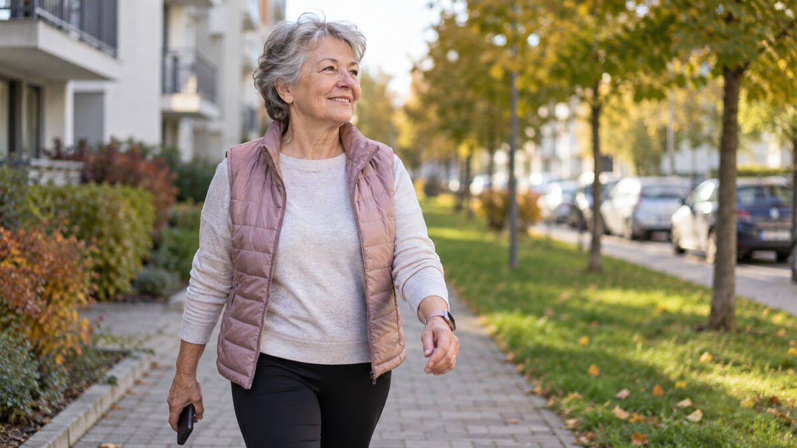
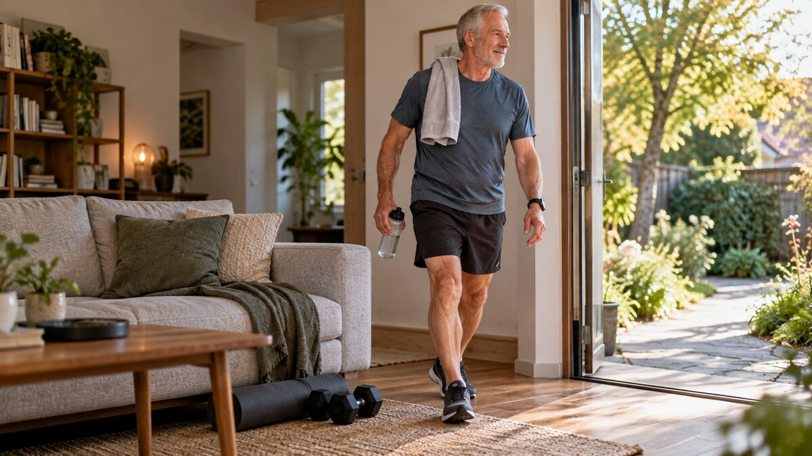

Regularny trening jest ważny, ale nie usuwa całego ryzyka związanego z wieloma godzinami bez ruchu. Krótkie przerwy w siedzeniu mogą doraźnie poprawiać odpowiedź glukozy i insuliny po posiłku. Nie zastępują ćwiczeń ani leczenia; są osobnym, prostym elementem dnia, który warto dopasować do sprawności i ryzyka upadku.
Szybka odpowiedź
Przerywanie długiego siedzenia krótkim marszem może doraźnie poprawić poposiłkową glukozę i insulinę w porównaniu z nieprzerwanym siedzeniem. Badania nie wyznaczają jednej idealnej częstotliwości ani nie dowodzą, że przerwy zastępują trening. Praktyczny początek to wstanie co 30–60 minut i 2–5 minut ruchu, dopasowane do sprawności i ryzyka upadku.
Kluczowe wnioski
Przerwy od siedzenia są dodatkiem do treningu, a ich optymalna dawka nie została ustalona raz na zawsze.
- Najlepiej przebadane są krótkotrwałe efekty przerw na poposiłkową glukozę i insulinę.
- Praktyczny zakres 2–5 minut ruchu co 30–60 minut jest punktem startu, nie medyczną normą.
- Osoby z zawrotami głowy, bólem lub ryzykiem upadku powinny dobrać bezpieczną formę przerwy.
Problem, którego nie ma na plakacie w gabinecie lekarskim?
Jest takie zjawisko, które badacze nazywają „Active Couch Potato”. Po polsku: aktywny kanapowiec. To jest osoba, która ćwiczy regularnie — 3 razy w tygodniu, może 4 — ale poza tymi godzinami treningu siedzi praktycznie bez przerwy. I ta osoba może mieć wyższe ryzyko chorób metabolicznych niż ktoś, kto podobny czas siedzenia regularnie przerywa wstawaniem i ruchem.

Czas siedzenia różni się między osobami i zależy od sposobu pomiaru, dlatego nie przypisujemy każdemu po 50-tce zakresu 9–11 godzin. Zmierz własny dzień: zapisz pracę, transport i wieczór przez trzy dni albo odczytaj czas bezruchu z urządzenia, pamiętając, że zegarek także może się mylić.
Przerwy nie zastępują zaplanowanego ruchu. Połącz je z treningiem siłowym, dopasowaną dietą po 50-tce i snem, zamiast powielać jeden zestaw ogólnych linków.
Co konkretnie robi siedzenie z ciałem po 50-tce?
Podczas siedzenia mięśnie nóg pracują mniej, przepływ krwi w kończynach zmienia się, a po posiłku glukoza i insulina mogą utrzymywać się wyżej niż wtedy, gdy siedzenie przerywa krótki marsz. Nie oznacza to, że po dokładnie 30 minutach zachodzi jeden gwałtowny przełącznik metaboliczny.

Długie siedzenie może współwystępować z bólem lub sztywnością, ale nie każdy ból pleców pochodzi od krzesła. Badania krótkich przerw najczęściej oceniają glukozę, insulinę, ciśnienie albo przepływ krwi; wynik laboratoryjny nie jest automatycznie diagnozą konkretnej osoby.
Co obserwowano podczas krótkich przerw w siedzeniu?
Skurcze mięśni nóg pomagają w powrocie żylnym i zużyciu glukozy. Podczas bezruchu ten udział jest mniejszy; po posiłku odpowiedź metaboliczna może być mniej korzystna. Wielkość efektu zależy od długości siedzenia, rodzaju przerwy, posiłku i stanu zdrowia, dlatego nie każdy odczuje tę samą zmianę.
Badania testują różne rytmy przerw; 30 minut jest jednym z badanych ustawień, nie biologiczną granicą dla każdego.
Co się dzieje przez długi czas — miesiące i lata
- Glikemia — długie nieprzerwane siedzenie może pogarszać odpowiedź poposiłkową, szczególnie u osób z ryzykiem metabolicznym.
- Skład ciała — więcej siedzenia bywa związane z większym obwodem talii, lecz związek nie dowodzi, że siedzenie samo wywoła zmianę bez zmiany energii i aktywności.
- Ryzyko sercowo-metaboliczne — w badaniach populacyjnych dłuższy czas siedzenia wiąże się z mniej korzystnym profilem, ale wpływają na niego także dieta, palenie, choroby i całkowity ruch.
- Sprawność mięśni — brak używania mięśni nie pomaga w ich utrzymaniu, lecz nie można przewidzieć tempa utraty wyłącznie z liczby godzin siedzenia.
Pół godziny mniej — co naprawdę się zmienia po roku?
Trzydzieści minut mniej siedzenia dziennie to łatwy do policzenia cel, ale nie ma podstaw, by przeliczać go liniowo na określony spadek ryzyka po roku. Badania zastępowania czasu pokazują związki populacyjne, a krótkie eksperymenty mierzą doraźne markery. Oba rodzaje danych wspierają „siedź mniej, ruszaj się więcej”, nie gwarancję wyniku.

Odpowiedź zależy od tego, czym zastąpisz siedzenie. Lekki marsz daje inny bodziec niż samo stanie, a korzyść jest zwykle większa u osób najmniej aktywnych. Wynik modelu statystycznego nie jest prognozą dla jednej osoby.
A co z 30 minutami mniej siedzenia dziennie przez rok? Matematyka jest prosta i zaskakująca:
- 30 minut dziennie × 365 dni = 182 godziny mniej siedzenia rocznie.
- Każde 30 minut zamieniasz na lekki ruch — chodzenie po mieszkaniu, stanie, spacer.
- Nie mnożymy procentów z badań populacyjnych przez liczbę dni; efekt nie kumuluje się w taki prosty sposób.
Największą potencjalną korzyść z nawet małej dawki ruchu obserwuje się zwykle u osób najmniej aktywnych. Są to szacunki populacyjne, nie obietnica zmniejszenia indywidualnego ryzyka o stały procent.
Dlaczego chodzenie to nie „cokolwiek”?
1. Chodzenie aktywuje enzymy, które siedzenie wyłącza
Wstanie i marsz uruchamiają skurcze mięśni nóg, zwiększają ich zapotrzebowanie na energię i wspierają przepływ krwi. Nie ma podstaw do obietnicy, że po 20–30 minutach siedzenia aktywność konkretnego enzymu spada u człowieka o ponad 90% ani że jeden krok natychmiast odwraca cały efekt. Jeśli lubisz zmienne tempo, zobacz też marsz japoński i porównanie z celem 10 000 kroków.
Pracujące mięśnie wydzielają różne cząsteczki sygnałowe nazywane miokinami. Nie są „naturalnymi lekami”, nie wszystkie działają wyłącznie korzystnie i nie można powiedzieć, że podczas siedzenia ich produkcja całkowicie ustaje. Praktyczny mechanizm krótkiego marszu to przede wszystkim skurcz mięśni i wykorzystanie energii.
2. Krótki marsz może poprawić poposiłkową glukozę
W badaniach laboratoryjnych u osób z cukrzycą typu 2 krótkie przerwy na marsz poprawiały poposiłkową glukozę w porównaniu z nieprzerwanym siedzeniem. Nie porównuje to ruchu z leczeniem i nie uzasadnia odstawienia leków. Przerwy są dodatkiem do terapii ustalonej z lekarzem.
3. Co badania obserwacyjne mówią o liczbie kroków?
| Kto to badał | Zakres obserwacji | Co to oznacza |
|---|---|---|
| JAMA Internal Medicine (2019) | ~7 500 kroków / dzień | W badaniu starszych kobiet krzywa korzyści wypłaszczała się w pobliżu 7 500 kroków; to związek obserwacyjny, nie próg recepty. |
| Lancet Public Health (2022) | ~6 000 kroków / dzień | W metaanalizie u dorosłych 60+ zależność wypłaszczała się około 6–8 tys. kroków, ale więcej kroków nie uznano za szkodliwe. |
| Praktyczny cel indywidualny | 7 000–8 000 kroków | Zwiększ własną średnią stopniowo; wiek, sprawność, ból i ryzyko upadku są ważniejsze niż jeden uniwersalny cel. |
| Skąd się wzięło 10 000? | Historyczny cel urządzenia | 10 000 nie jest medycznym minimum, ale może być osiągalnym celem dla części osób. |
Wniosek: nie musisz od razu dążyć do 10 000. Sprawdź średnią z tygodnia i dodaj wykonalną liczbę kroków bez nasilania bólu lub ryzyka upadku. Zakres 6–8 tys. pochodzi z obserwacji populacyjnych, nie jest obowiązkową normą po 50-tce.
Nazwa Manpo-kei dosłownie znaczy „10 000 kroków miernik”. To była strategia marketingowa firmy Yamasa Tokei. Przez 60 lat żyje w zbiorowej świadomości jako „medyczna norma”.
4. Chodzenie i mózg — związek, który robi wrażenie
Chodzenie może wspierać sprawność, nastrój i zdrowie mózgu, ale ostra zmiana przepływu krwi lub BDNF nie gwarantuje poprawy pamięci. Korzyści poznawcze ocenia się w dłuższych programach i zależą one od dawki, zdrowia, snu oraz innych aktywności.
Eksperymenty nad chodzeniem i generowaniem pomysłów sugerują poprawę części zadań twórczych, ale wynik zależy od testu i nie oznacza trwałego wzrostu kreatywności o jeden uniwersalny procent.
5. Chodzenie a zdrowie długoterminowe
Jak to zrobić?
Wybierz sygnał, który już pojawia się w Twoim dniu: koniec rozmowy, reklama w telewizji, uzupełnienie wody albo wysłanie dokumentu. Wtedy wstań na 2–5 minut. Jeśli szybkie podnoszenie powoduje zawroty głowy, rób to wolniej i wykorzystaj stabilne podparcie. Dłuższy spacer możesz rozwijać osobno, na przykład według zasad bezpiecznego nordic walking po 50-tce.
Nie musisz nic specjalnego planować. Potrzebujesz tylko jednej zmiany w myśleniu: każde 30–40 minut siedzenia = automatyczny sygnał do wstania na 2–5 minut.
- Budzik lub alarm w telefonie co 35 minut — kiedy dzwoni, wstajesz. Tylko tyle.
- Szklanka wody na biurku — musi się skończyć przed następną szklanką (po którą idziesz do kuchni).
- Drukarka w innym pokoju — klasyczna metoda, która działa i była testowana przez naukowców.
- Telefon w innym kącie mieszkania — za każdym razem, gdy dzwoni — wstajesz.
- Wieczór: zamiast 3 odcinków serialu siedząc — jeden odcinek na rowerze stacjonarnym lub orbitreku. Resztę normalnie.
Jeśli chodzenie nasila ból, sama zmiana pozycji może ograniczyć czas nieprzerwanego siedzenia, lecz stanie zwykle daje mniejszy efekt metaboliczny niż marsz. Dobierz bezpieczny ruch z fizjoterapeutą; przy obrzęku, urazie lub nagłym bólu nie testuj go na siłę.
Obalamy mity?
Mity mieszają dwa różne cele: spełnienie zaleceń treningowych i ograniczenie czasu bez ruchu. Można ćwiczyć regularnie, a nadal siedzieć długo; można też często wstawać, ale nie wykonywać treningu wzmacniającego. Najlepsza strategia łączy oba zachowania, bez oczekiwania, że jedno całkowicie „wyzeruje” drugie.

| MIT | FAKT |
|---|---|
| Jeśli chodzisz na siłownię — siedzenie nie ma znaczenia. | Błąd. Siedzenie jest niezależnym czynnikiem ryzyka. Możesz mieć metaboliczne skutki siedzenia mimo ćwiczeń. |
| 10 000 kroków to naukowa norma. | 10 000 nie jest medycznym minimum. Badania pokazują korzyści już przy wzroście z niższego poziomu, bez jednej normy dla każdej osoby po 50-tce. |
| Godzina treningu nadrabia cały dzień siedzenia. | Niestety nie. Jedna godzina siłowni nie „zeruje” 10 godzin siedzenia. |
| Stanie przy biurku rozwiązuje problem. | Stanie przez 8 godzin też nie jest idealne. Chodzi o przemienność: siądź, wstań, chodź. |
Na koniec?
Nie potrzebujesz magicznej liczby kroków ani perfekcyjnego alarmu. Zacznij od jednej pory dnia, w której zwykle siedzisz bez przerwy, i dodaj krótkie przejście po mieszkaniu. Po tygodniu sprawdź wykonalność, a nie wynik laboratoryjny. Potem obejmij przerwami kolejne bloki dnia.
Nie 10 000 kroków. Nie godzina ćwiczeń. Nie 30 minut cardio.
30 minut mniej siedzenia dziennie.
To jest liczba, którą każdy może osiągnąć bez żadnej dodatkowej infrastruktury. Przez rok: 182 godziny ruchu zamiast siedzenia. Tyle samo co kilkadziesiąt sesji siłowni.
Źródła i linki
- [1] Dunstan DW et al. (2021). Sit less and move more for cardiovascular health. Nature Reviews Cardiology.
- [2] Keadle SK et al. (2017). Targeted Reductions in Sitting Time to Increase Physical Activity and Improve Health. PMC5511092.
- [3] Diaz KM et al. (2025). Breaking up prolonged sedentary behavior to improve blood glucose and blood pressure. BMC Public Health.
- [4] Carter SE et al. (2022). Acute effects of interrupting prolonged sitting with standing and light-intensity walking. PMC9325803.
- [5] Buman MP et al. (2015). For every 30 minutes reallocated from sedentary time to light-physical activity: 2-4% improvement in CVD risk biomarkers. PMC8059591.
- [6] Lee IM et al. (2019). Association of step volume and intensity with all-cause mortality in older women. JAMA Internal Medicine.
- [7] Paluch AE et al. (2022). Daily steps and all-cause mortality: meta-analysis of 15 cohorts. Lancet Public Health.
Najczęściej zadawane pytania?
Czy 30 minut mniej siedzenia dziennie naprawdę coś zmienia po 50?
Zamiana części siedzenia na lekki ruch może poprawiać doraźną glikemię i ograniczać czas bezruchu, ale 30 minut nie gwarantuje określonego wyniku po roku. Korzyść zależy od tego, czym zastąpisz siedzenie i od całkowitej aktywności.
Co jest lepsze dla zdrowia: trening 3 razy w tygodniu czy przerwy od siedzenia codziennie?
To różne cele: trening buduje sprawność, a przerwy skracają nieprzerwany bezruch. Najlepiej łączyć ćwiczenia aerobowe i siłowe z częstszą zmianą pozycji; nie da się wyliczyć, że jedno zachowanie całkowicie neutralizuje drugie.
Jak często robić przerwy od siedzenia przy pracy biurowej?
Badania testują różne rytmy. Praktyczny eksperyment to 2–5 minut ruchu co 30–60 minut, bez traktowania 30 minut jako biologicznej granicy. Wybierz marsz lub bezpieczną zmianę pozycji; przy zawrotach wstawaj wolno.
Jak wdrożyć to po 50-tce krok po kroku?
Ustaw jeden sygnał przypominający, wstawaj spokojnie co 30–60 minut i przez 2–5 minut maszeruj lub wykonaj ruch bezpieczny dla swojej sprawności. Po tygodniu sprawdź wykonalność, objawy i całkowity czas siedzenia zamiast zakładać efekt zdrowotny z samego alarmu.